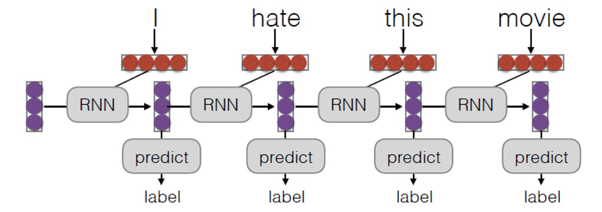
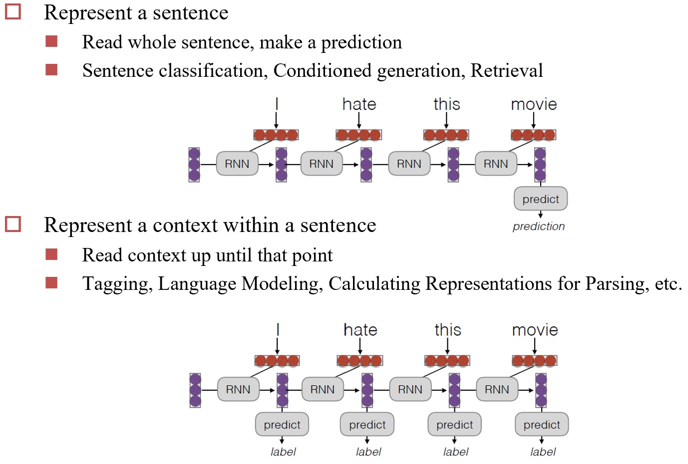

Chapter 5. 循环神经网络 Recurrent Neural Networks¶
RNN是一种“有记忆”的神经网络，适合处理序列数据（如文本、语音、视频等）。
5.1 循环神经网络结构¶
RNN基本结构¶
- 预测函数 \(f\) 保持不变，最早的 \(f\) 其实就是一个MLP
双向RNN(Bidirectional RNN)
RNN的一个变种，思路为收集前后双向的信息。
预测函数设计¶
Naive RNN¶
主要问题：
- \(h\) 的变化非常剧烈，记忆跳跃，表现得很随机
- 只能串行处理，计算速度慢
- 梯度消失或爆炸（因为反向传播时，深度大且每一层的参数都相同，损失函数类似幂函数，1附近有跳变）
LSTM(Long Short-Term Memory)¶
为解决RNN记忆变化剧烈的问题，把输入分成长期记忆 \(c\) 和短期记忆 \(h\) 两部分：
计算方法：
- 当前输入和短期记忆拼接，作为输入信息；
- 对输入信息做归一化，取值 \(\in (-1, 1)\)
- 将输入信息转换成三个阀门，取值 \(\in (0, 1)\)，分别为：
- 输入阀门：决定多少当前输入信息进入长期记忆
- 遗忘阀门：决定保留多少长期记忆
- 输出阀门：决定多少长期记忆进入短期记忆
LSTM: A Search Space Odyssey
对LSTM做消融实验：
结论：
- 标准的LSTM工作得很好
- 遗忘门非常重要
- 输出门的激活函数非常重要
- 如果要简化LSTM，可以把输入门和遗忘门合并成一个门，且不使用peephole
但LSTM没有解决RNN只能串行计算的问题。
GRU(Gated Recurrent Unit)¶
将LSTM的input gate和forget gate合并成一个reset gate（记住和遗忘的占比相加为1）
GRU性能和LSTM相差不大，但计算速度更快。
5.2 用于NLP的循环神经网络 RNN for NLP¶
RNN用于NLP的优势¶
-
可以捕捉长距离的依赖关系（long-distance dependencies）（而CNN是基于窗口（window-based）的）
 Example
He does not have very much confidence in himself.
The reign has lasted as long as the life of the queen.
指代消解：
- The trophy would not fit in the brown suitcase because it was too big.
- The trophy would not fit in the brown suitcase because it was too small.
-
既可以做编码器，又可以做解码器（用来生成，但传统CNN做不了）

Encoder-Decoder Models¶
Warning
应该这么说：
- Seq2Seq 是 Encoder-Decoder 框架的一种具体实现，强调序列到序列的映射，通常基于RNN.
- Encoder-Decoder 是一个更广泛的框架，可以使用多种模型（如CNN、Transformer等）来实现。
又称为Seq2Seq模型，主要用于机器翻译任务
- encoder提取语义并编码，decoder解码成目标语言
5.3 注意力机制 Attention Mechanism¶
注意力机制的灵感
人会选择性地关注感受到的信息
Example
用眼动仪定量分析，热力图显示了人们在阅读时的注意力分布（注视时间）。
以机器翻译为例，使用注意力机制时，相当于对当前解码出的向量，在对应的键值（是编码的结果）空间中查找最相关的向量。实际做法是与每个键值向量点乘得到注意力权重分布，用softmax归一化后，再对每个键值向量对应的值向量加权求和，用得到的向量去预测下一个词。
为什么日翻英时，用的是英语当前最后一个词的Q？
仔细想会发现用日语的任何一个词都不行（顺序不匹配），所以最后这样做还是把问题变成一个“预测下一个词”的问题。
注意力权重有多种计算方式：
- MLP: \(a(q, k) = w_2^T tanh(W_1[q:k])\)
- 灵活性高
- Bilinear: \(a(q, k) = q^T W k\)
- 对 \(q\) 做投影，再与 \(k\) 点乘
- Dot Product: \(a(q, k) = q^T k\)
- 需 \(q\) 和 \(k\) 维度相同
- Scaled Dot Product: \(a(q, k) = \frac{q^T k}{\sqrt{|k|}}\)
- 真正在用的公式，其中 \(|k|\) 为 \(k\) 的维度，除以它的平方根是为了避免点乘值过大，导致softmax（指数计算）梯度消失。
指针网络 Pointer Network¶
问题：Seq2Seq模型应用于类似找凸包的问题时，输出序列长度不固定。
解决方法：使用注意力机制，直接在输入序列中进行选择并输出。